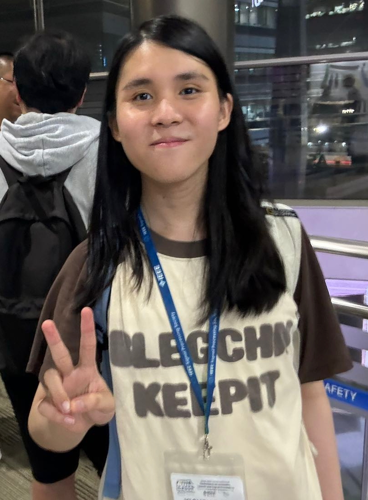

|  |
Bachelor Student, Email: yichenggu@link.cuhk.edu.cn, yicheng.gu@aalto.fi |
|
|
|
I'm a third-year Bachelor student at the Chinese University of Hong Kong, Shenzhen, supervised by
Professor Zhizheng Wu and working closely with Xueyao Zhang. I am currently working as a Visiting Scholar in
Aalto
University with Professor Lauri
Juvela. My research interests include:
|
|
|
| 2025/05 | My first paper about Neural Autotune got accepted by Interspeech 2025. |
| 2025/05 | My first paper about Virtual Analog Modeling got accepted by DAFx 2025. |
| 2024/09 | I entered Professor Lauri Juvela's lab as a Visiting Scholar in Aalto University. |
| 2024/09 | My first journal paper about neural vocoder got accepted by TASLP. |
| 2024/09 | Three of my papers have been accepted by SLT 2024. |
| 2024/07 | Method from my my first paper is implemented and supported by NVIDIA-BigVGAN 2.0 |
| 2024/07 | My first large-scale speech dataset Emilia got released. |
| 2023/12 | My first paper about neural vocoder got accepted by ICASSP 2024. |
| 2023/12 | My first attempt at developing a large-scale open-source project Amphion. |
| 2023/10 | My first paper about singing voice processing got accepted by ML4Audio @ NeurIPS 2023. |
| 2022/10 | I entered Professor Zhizheng Wu's lab after I was admitted by The Chinese University of Hong Kong, Shenzhen as a Bachelor student. |
|
✍ Call for Volunteers Our team supports trans rights and is broadly interested in Transgender Voice Therapy. We are currently collabrating with local hospitals and is in need of trans volunteers. If you are currently in Shenzhen or Shanghai and willing to participate our project, please fill in the form here. |
{kind=link}
|
|
|
TASLP
Yicheng Gu, Xueyao Zhang, Liumeng Xue, Haizhou Li, Zhizheng Wu IEEE Transactions on Audio, Speech and Language Processing Preprint / Code / Demo TL;DR: We propose a Continuous Wavelet Transform-based Discriminator for GAN-based neural Vocoders. |
|
ICASSP 2024
Yicheng Gu, Xueyao Zhang, Liumeng Xue, Zhizheng Wu International Conference on Acoustics, Speech, and Signal Processing 2024 Paper / Code / Demo / Pretrained Model TL;DR: We propose a Constant-Q Transform-based Discriminator for GAN-based neural vocoders. |
SLT 2024

Xueyao Zhang*, Liumeng Xue*, Yicheng Gu*, Yuancheng Wang*, Haorui He, Chaoren Wang, Xi Chen, Zihao Fang, Haopeng Chen, Junan Zhang, Tze Ying Tang, Lexiao Zou, Mingxuan Wang, Jun Han, Kai Chen, Haizhou Li, Zhizheng Wu (*: Equal Contribution) IEEE Spoken Language Technology Workshop 2024 Technical Report / GitHub / HuggingFace / OpenXLab TL;DR: We develop a unified audio generation open-source toolkit. |
|
SLT 2024
Haorui he*, Zengqiang Shang*, Chaoren Wang*, Xuyuan Li*, Yicheng Gu, Hua Hua, Liwei Liu, Chen Yang, Jiaqi Li, Peiyang Shi, Yuancheng Wang, Kai Chen, Pengyuan Zhang, Zhizheng Wu (*: Equal Contribution) IEEE Spoken Language Technology Workshop 2024 Preprint / Code / Demo / HuggingFace TL;DR: We propose a large scale multi-lingual speech dataset for TTS. |
|
Interspeech 2025
Conference of the International Speech Communication Association 2025 Yicheng Gu, Chaoren Wang, Zhizheng Wu, Lauri Juvela. Preprint / Code / Demo TL;DR: We propose the SOTA Neural Autotune benchmarking against Melodyne. |
|
DAFx 2025
Yicheng Gu, Runsong Zhang, Lauri Juvela, Zhizheng Wu. International Conference on Digital Audio Effects 2025 Preprint / HuggingFace / Demo TL;DR: We propose the first large-scale and diverse dataset for Virtual Analog Modeling. |
|
ML4Audio @ NeurIPS 2023
Xueyao Zhang, Yicheng Gu, Haopeng Chen, Zihao Fang, Lexiao Zou, Liumeng Xue, Zhizheng Wu Machine Learning for Audio Workshop (ML4Audio) at NeurIPS 2023 Paper / Code / Demo / Pretrained Model / HuggingFace Space / OpenXLab App TL;DR: We propose to utilize multiple content features for singing voice conversion. |
|
SLT 2024
Xueyao Zhang, Zihao Fang, Yicheng Gu, Haopeng Chen, Lexiao Zou, Junan Zhang, Liumeng Xue, Zhizheng Wu IEEE Spoken Language Technology Workshop 2024 Preprint / Code / Demo TL;DR: We investigated the pros and cons of different semantic tokens for Singing Voice Conversion. |
|
submitted
Yiming Zhang, Yicheng Gu, Yanhong Zeng, Zhening Xing, Zhizheng Wu, Kai Chen Preprint / Code / HuggingFace / Demo TL;DR: We propose a Video-to-Audio generation pipeline with Audio-Visual Synchronization and Text-Editability. |
|
submitted
Yicheng Gu, Chaoren Wang, Junan Zhang, Xueyao Zhang, Zihao Fang, Haorui He, Zhizheng Wu TL;DR: We propose an Extensive, Multilingual, and Diverse Singing Voice Corpus. |
|
submitted
Haorui he*, Zengqiang Shang*, Chaoren Wang*, Xuyuan Li*, Yicheng Gu, Hua Hua, Liwei Liu, Chen Yang, Jiaqi Li, Peiyang Shi, Yuancheng Wang, Kai Chen, Pengyuan Zhang, Zhizheng Wu (*: Equal Contribution) TL;DR: We propose the 2.0 version of Emilia for TTS. |
|
|
| Shanghai AI Laboratory |
Research Assistant, @Shanghai, China (2023/12 ~ 2025/03)
#Video to Audio Generation |
| Aalto Univeristy |
Visiting Scholar, @Espoo, Finland (2024/09 ~ 2025/06)
#Digital Audio Effects |
|
|
| Reviewer |
Conferences:
|
|
|
| 2022-2026 |
Bachelor student in Computer Science, supervised by
Professor Zhizheng Wu
School of Data Science, The Chinese University of Hong Kong, Shenzhen, China |
| 2024-2025 |
Exchange student in Computer Science, supervised by
Professor Lauri Juvela
School of Science, Aalto University, Espoo, Finland |
|
|
| 2024 | The Nobel Class (Top 1, 2024) |
| 2024 | The Academic Performance Scholarship, Class A (Top 1%, 2024) |
| 2023 | The Academic Performance Scholarship, Class B (Top 3%, 2023) |
| 2022 | "LanHuaYing" Scholarship (Top 10 admitted students in Zhejiang Province, 2022) |